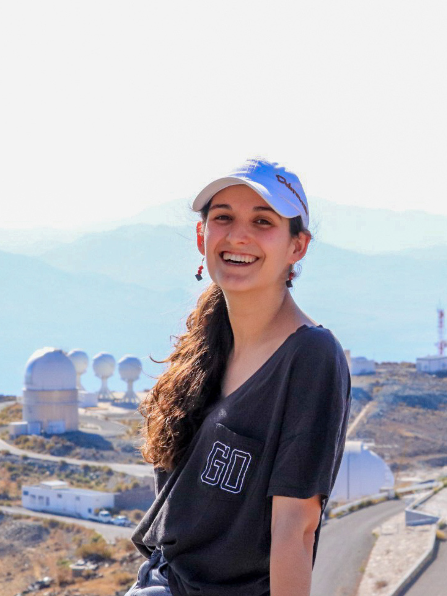

About me

You are the Universe, expressing itself as a human for a little while. - Eckhart Tolle
My name is Ana Rita. I'm a PhD candidate in Astronomy at the University of Porto.
I carry out my activities at the
Instituto de Astrofísica e Ciências do Espaço (Portugal) and the
Observatoire de Genève (Switzerland).
I grew up in a Portuguese town called Santarém. I was a menace with science kits, frequently turning the backyard into a laboratory that was only accessible after putting googles on. The love for chemistry didn't wear out, but the fascination for Astronomy ultimately took over.
After turning 18, I moved to the UK where I graduated from the University of Hertfordshire with a BSc (Hons) in Astrophysics in 2020. Following this, I carried out a remote research internship at Chalmers University of Technology (Sweden). I started my PhD in October 2021, and expect to finish in mid-2025.
Being a science communicator is a big part of my personality. It brings me tremendous joy to see people around me truly appreciate science and its wonders, and get excited when they understand complex topics.
I love all things science (duh!) but there's more! I love travelling the world, journaling and getting lost in puzzles, crafts and DIYs. You'll frequently find me reading police novels, fiction stories, or self-improvement books.
I run on sugar rather than coffee (an outlier of the academic world), and I'm picky about my alcohol, but I'm always up for crashing it on the dance floor!